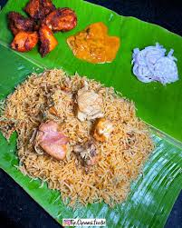

Biriyani

Description
This is an indo-persian dish gained its popularity after it's been made to the liking of the people of india, combining it with spices native of Inida.
Ingredients:
- Meat (Chicken/Goat)
- Basmati Rice
- Whole Garam Masala
- Onion
- Curd
- Ghee
- Spices
- Corriander
- Mint
Steps:
- Marinate the meat of your choice with all the ingredients except for rice.
- Wash and soak the rice for 30 mins.
- Now in a large container cook the rice upto 50%.
- Take another container and add some ghee and whole garam masala.
- Add the marinated meat and spices to your taste.
- After the meat cooks to about 50% adda the half cooked rice on top of the meat container and seal it, so that the steam won't escape out and both rice and meat cooks with exchanging their flavours procuding a perfect Biriyani.